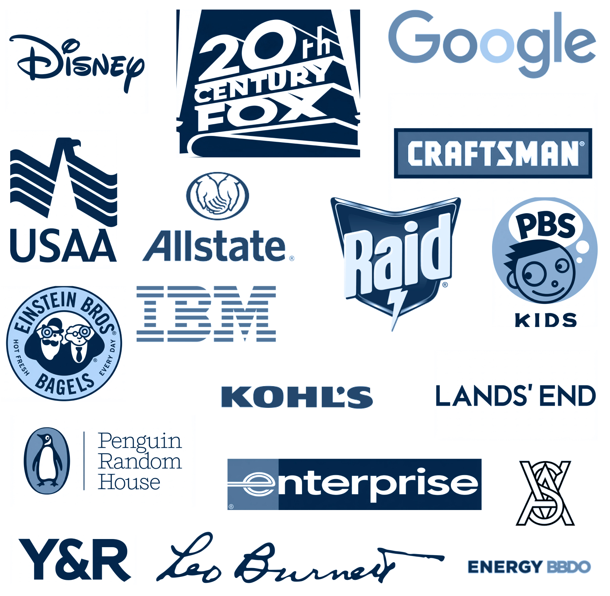

Freelance Artist & Designer
UI/UX Product Design - Illustration - UI Animation
I offer a suite of creative services ranging from: design for digital and print, Branding, software prototyping, and traditional/digital illustration

REsume
Digital Artist & Sr. Product Designer
I am a freelance designer and illustrator quietly working my magic from a secret bunker in an undisclosed location. With over 15 years in art and design I have managed to have my work featured on The ABC Television Network, 20th Century Fox, Lionsgate, Mashable, BuzzFeed, and many others. I have a strong UX backbone that has steered the direction of innovative software across a league of products ranging from lifestyle apps for startups to custom management systems for industry leaders. And if print is still your thing. I got you covered.
2006 - 2026
2007 - Today
UI/UX Product Design - Illustration - UI Animation
I offer a suite of creative services ranging from: design for digital and print, Branding, software prototyping, and traditional/digital illustration
2026 - Today
Sr. Visual Systems Designer - Illustration - Animation
I support 7 product designers spread across the commerce, logistics and financial programs. In addition to making sure the design system is applied consistently, and maintaining continuity across experiences, I also help my PDs make sound, user centered design decisions and at times support them in navigating conflict. My unique skillset among my fellow VSDs is illustration and animation. I’m the primary contributor of new icons. I bring engaging motion to the Skye AI chat bot. And I’m the the lead illustrator in our current effort to refresh the illustration style.
2025 - 2026
UI/UX Product Design - Illustration - UI Animation
2022 - 2024
Sr. UI/UX Product Designer
2020 - 2021
Sr. UI/UX Product Designer - Illustrator
Complete rebranding and redesign of website (mobile first solutions). Created their component library with elements ready for quick assembly of prototypes. I also illustrated all art and custom icons.
2020 - 2021
Sr. UI/UX Product Designer
Iterative design of the current iFit home workout product. I also worked on their exploration team, where we design and tested the future of iFIT, building advanced, realistic prototypes.
2019 - 2022
Sr. UI/UX Product Designer
Illustrator - UI Animator
2016 - 2022
Illustrator
Responsible for all the Kids Snack Box art. Character designer for "Ben Flyin and Friends" Spot and hero illustrations for web, packaging and print collateral.
2017 - 6 Months
Illustrator
Hired to create the illustration style for the rebranding of My Case. Spot, hero and deluxe icon illustrations for a web app.
2017 - 2 Months
Illustrator
I was sought out by 20th Century Fox to illustrate an alternative poster for the 2017 film "The Post"
2016 -3 Months
Illustrator - Book cover Designer
I was sought out to illustrate the cover for "Love Hurts Buddist Advice For The Brokenhearted" by Lodro Rinzler. On Shelves now.
2016 -2019
Illustrator
Over the course of 3 years, I worked (on and off) with VSA Partners illustrating for their clients: Google, Blue Point Brewery, and Abbott
2015 -2020
Chief Creative Guru
2014 -2019
Sr. UI/UX Product Designer
2014 -3 Months
Illustrator - Book cover Designer
Collaborated on cover illustrations for their Twisted Tales book series. A skewed reimagining of the classic Disney Stories.
2011 - 2013
Jr. UI/UX - Print Designer - Illustrator
Provided a range of design collateral in the healthcare space from: presentation design, email templates, assorted print material, publication, and medical software.
2006 - 2009
Print Designer - Print Operator
Created a plethora of designed material for all departments. Projects included: posters, postcards, invites, flyers, brochures, booklets, signage, informational design, professional documents and other design collateral.
2009 - Gratuated
Academy of Design, Chicago
BFA / Visual communication
2009 - 2024
